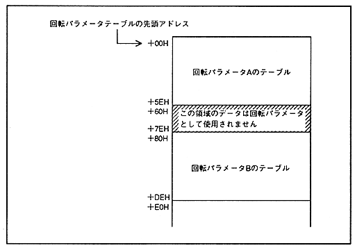

When storing two sets of tables, rotation parameter A and rotation parameter B, store the rotation parameter A table from the start address of the rotation parameter table, and then insert invalid data for 20H to rotate. Stores the table of parameter B. Rotation parameter tables do not always have to be stored in two sets, just the necessary tables. Figure 6.4 shows how to store two sets of tables, rotation parameter A and rotation parameter B.
Figure 6.4 Rotation parameter table storage method in VRAM
